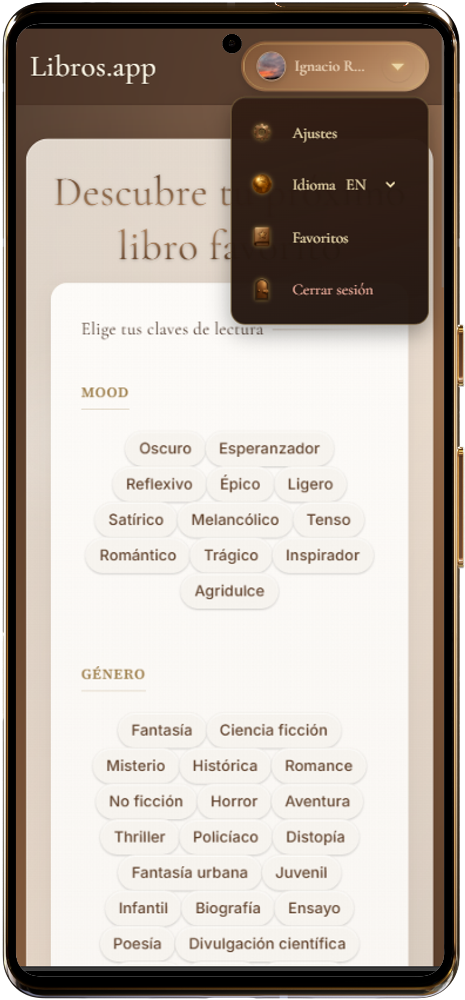
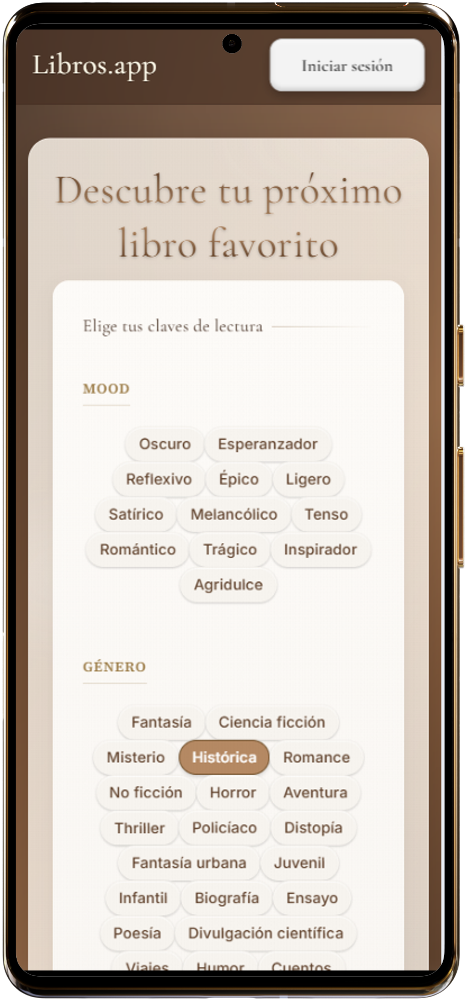
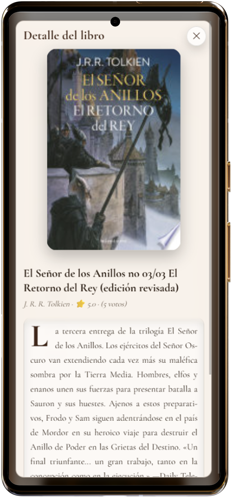
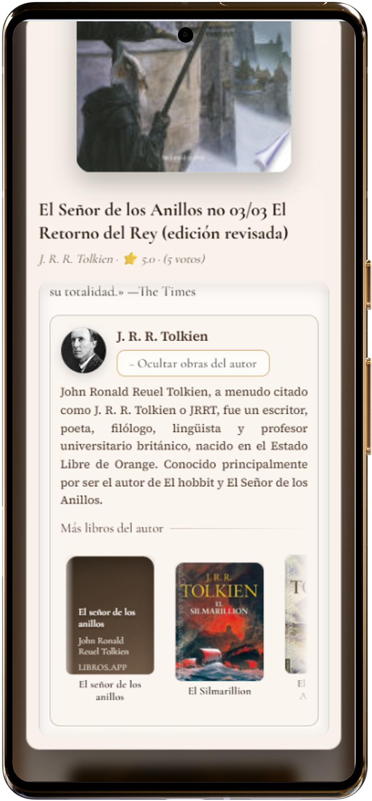

Recomendador literario con APIs externas y diseño UI/UX editorial
Proyecto personal · Producto vivo · v1
Qué es LibrOs.app
Un recomendador de libros que une APIs abiertas (Google Books + Wikipedia),
UI/UX editorial y pequeñas dosis de IA para generar sinopsis y mejorar la
exploración. Objetivo: que el lector encuentre “ese” libro sin perderse en ruido.
Frontend puro (HTML/CSS/JS)Firebase Auth (Google)Google Books · WikipediaVercelUX first · Accesibilidad AA
Reto
Convertir un listado infinito en una experiencia curada: menos scroll, más intención.
Poner el foco en la decisión (¿qué leo ahora?) y no en la fricción
(formularios, filtros rotos, portadas feo-pixeladas).
Solución (en una frase)
Chips de intención (género · estado de ánimo · longitud) + búsqueda de texto + ficha
elegante con sinopsis generada, bio del autor y portadas
limpias, todo en un flujo una sola pantalla.

Home editorial: tipografía Cormorant + paleta bronce/madera.

Chips de intención: el usuario decide cómo quiere leer.

Modal del libro: sinopsis generada + obras del autor + CTA claro.

Bio del autor en glass-card con toggle (lectura corta/larga).
Arquitectura & módulos
/js
├─ state.js // estado global (selecciones, libro actual, historial)
├─ config.js // constantes: GENRES, MOODS, LENGTH, endpoints
├─ helpers.js // utilidades DOM ($, $all) + formateos
├─ render.js // pintado de resultados, ficha actual, guardados, modal
├─ chips.js // montaje de chips + monoselección
├─ textSearch.js // búsqueda libre por título/autor/tema
├─ api.js // Google Books + Wikipedia + generación de sinopsis
├─ quotes.js // tarjeta de citas destacadas
├─ reco.js // lógica de recomendación basada en chips
├─ author-toggle.js // abrir/cerrar bio extendida
└─ main.js // orquestación de eventos y flujo
Decisiones de diseño
Tipografía: Cormorant Garamond para títulos (alma editorial), sans-serif limpia para cuerpo.
Paleta: bronces y cálidos con sombras suaves; sensación “biblioteca moderna”.
Micro-interacciones: hover sutil, modales con blur, estrellas 0–10, chips con feedback instantáneo.
Portadas: prioridad a calidad → placeholders elegantes si falta imagen.
Funcionalidades clave
Autenticación con Google (Firebase) para favoritos y progreso.
Recomendación por chips (género/mood/longitud) + búsqueda manual.
Sinopsis generada con IA y bio del autor (Wikipedia) sin salir de la app.
Trending con “cortina” y tabs (ES vs. NYT) con portadas estilizadas.
Bloques glass-card (autor) y modal con accesibilidad (teclas, focus-trap).
Accesibilidad & rendimiento
Modal accesible: aria-hidden, etiquetas y cierre por Esc.
Lazy-loading de imágenes y caché de respuestas API básicas.
Contraste testeado a nivel AA; tamaños fluidos con clamp().
Retos & soluciones
Datos irregulares (portadas/ratings): normalización + placeholders de marca.
Texto largo (bios/sinopsis): colapsado con toggle y lectura cómoda.
Monolito → modular: separación por responsabilidades para escalar sin dolor.
Aprendizajes
Diseñar primero la decisión y después la interfaz. Menos “features”, más
flow claro. Y documentarlo: la narrativa del producto pesa tanto como el código.
Roadmap
Perfiles con seguimiento de lecturas y favoritos.
Más proveedores de datos (ratings consolidados, reseñas limpias).
 Proyecto DAM
Proyecto DAM